超級大富翁
晚上如預期般的下起了雨，雨勢還挺不小的，幸好沒淹到睡覺的樓梯間，平安無事的睡到天亮。
沒聽到鬧鐘的響聲，一直睡到早上將近七點，聽到有人竊竊私語的講話聲才醒過來，天亮之後就被路過的人看到了。
他們大概在討論這個袋子裡裝的是活人還是屍體吧，這時感覺有點尷尬，坐起身來表明自己還活著，他們也就離開了。
這邊就是昨天睡覺的樓梯間，我自己怎麼看都覺得非常隱蔽，怎麼會被發現呢？
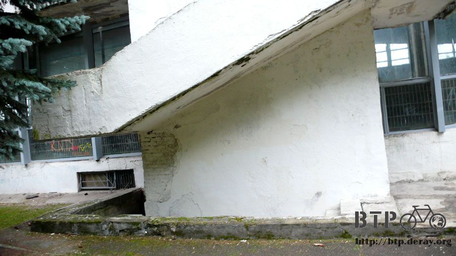
地上還留有昨天下雨的積水，而且天空的烏雲一點也沒有散去，現在只是暫停一下，這樣也算是一個好的開始，不會讓一早的心情就陷入陰沉。
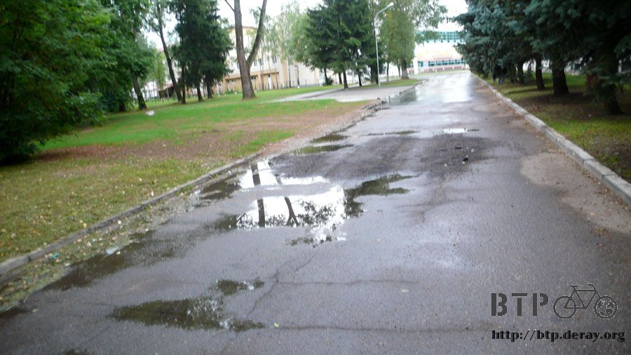
進到首都來的目的是為了上傳遊記，要上傳遊記之前得先找地方寫才行，之前都去餐廳或是加油站，今天想換個地方。
既然這裡是體育館，不如就去裡面找電源吧。
一大早還沒有人在裡面練習，和我一起進去的只有一位女運動員，說不定我正和一位將來的奧運金牌得主擦身而過。

裡面空蕩蕩的，管理員問我想幹嘛？閒雜人等好像不能隨便進出，只好去城裡面找插頭了。
看到圓環標示的時候非常清楚自己進城一定會迷路，最保險的方式就是等等走回頭路，但這樣就白繞路了。
比較冒險就是穿越整個明斯克繼續往波蘭走，在沒有城市地圖的情況下，這麼做絕對不是明智的決定，到時迷路了想問路也是一個頭兩個大。
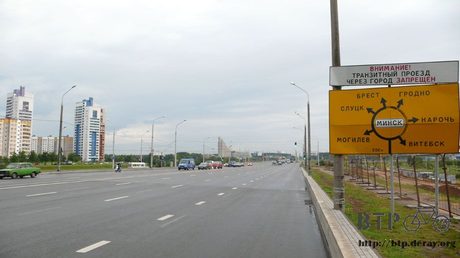
雨滴很快的就落下，一開始小小的，然後越下越大，伴隨著寒冷的風吹拂，實在冷到不行。
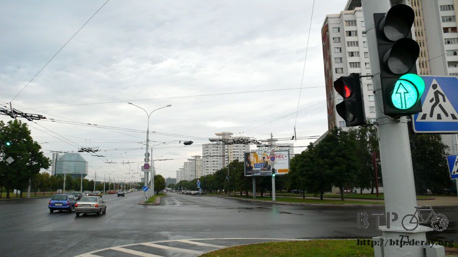
進城的路上出現一些奇怪的建築物，拍張照意思一下就好，介紹就免了。
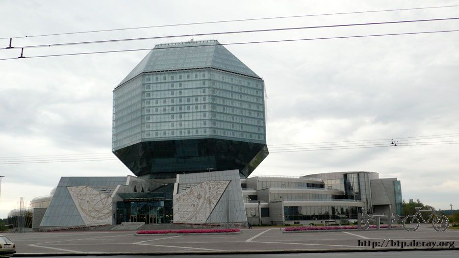
今天是星期六，商家大多休息，抵達城市的時候還不到早上八點，幾乎沒有商家開始營業，室外的溫度計顯示目前只有十五度，難怪穿了厚的衣服還是冷。
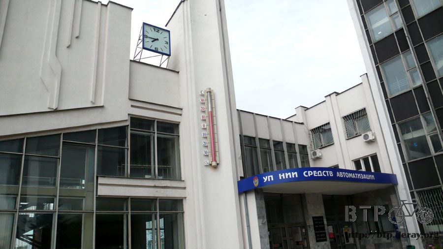
之前要在郊區找餐廳很容易，只要有看到那幾乎都是營業中，進城之後餐廳多得跟什麼一樣，但是全部都休息。
營業時間從早上十點或是十二點才開始，八點多穿梭在下雨的街頭，想找個舒服的地方吃頓早午餐兼寫遊記都沒辦法。
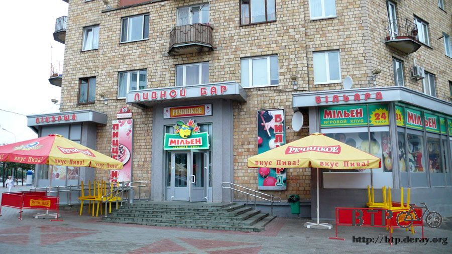
這個時候唯一有營業的居然是理髮廳，一大清早就開門，裡面也是冷冷清清，誰會這麼早來剪頭髮呢？
有點想進去光顧，剪完頭髮之後就在裡面耗一整個早上，可是費用很貴，而且頭髮還沒長到非剪不可，究竟哪邊有餐廳呀？
市區閒晃的時候發現的雕像，看起來是騎自行車送報的老伯伯，做得栩栩如生。
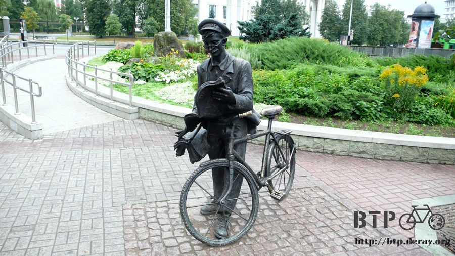
有點好奇他在看的那份報紙是什麼內容嗎？
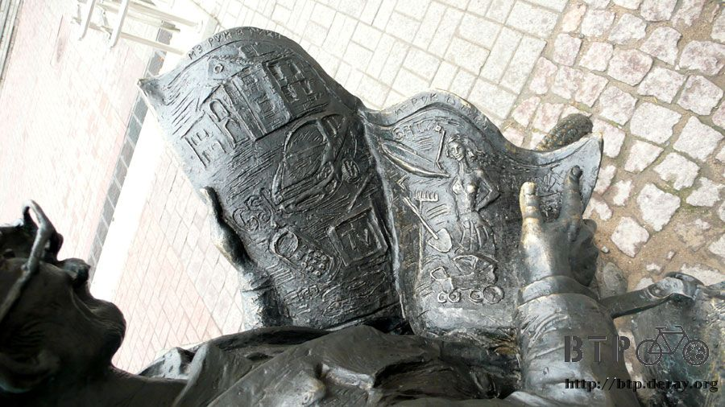
不是太正經的東西，還有穿比基尼的小姐。
連報紙內頁這種細節都注意到並且設計出來，目前只有這座雕像以及小島秀夫(MGS的製作人)有這種精神。
尋尋覓覓之下好不容易在街邊給我發現插頭，心中大喜！馬上靠牆停好車子，拿出變壓器跟電腦準備蹲在街頭寫遊記。
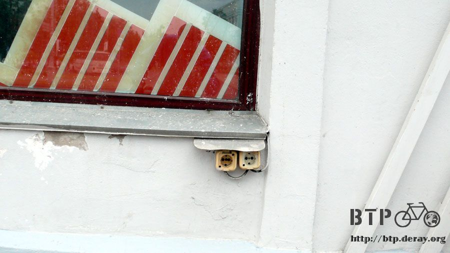
結果這是沒電的.....剛剛拿出來的東西又得一個一個收回包包裡，不過是個插頭居然那麼難找，這裡是都市耶。
冷清的街道，行人只有小貓兩三隻，看來整座城市都還在睡覺當中。
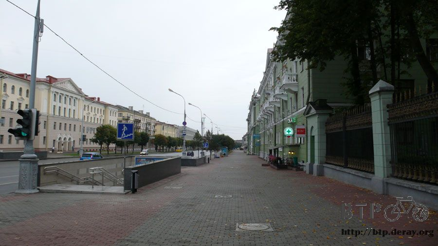
這間百貨公司的名字跟莫斯科紅場那一間『吉姆百貨』同名，不知道有沒有什麼關係？
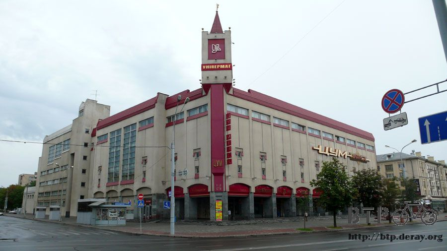
好大的光頭銅像，正好有個人在旁邊可以當比例尺，這個銅像看起來兇巴巴的樣子，很像也可以有一餐飯就吃一萬多的時跟誰約在這裡可是被放鴿子。
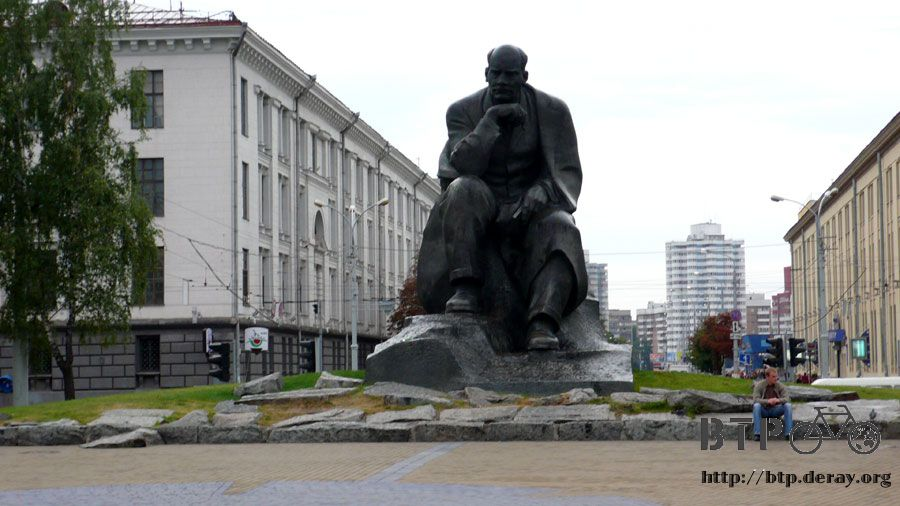
雨下個不停，越來越深入城市，接下來要回頭走到圓環的入口已經不在考慮之中了，都走這麼遠了不如就賭它一把直接穿越城市。
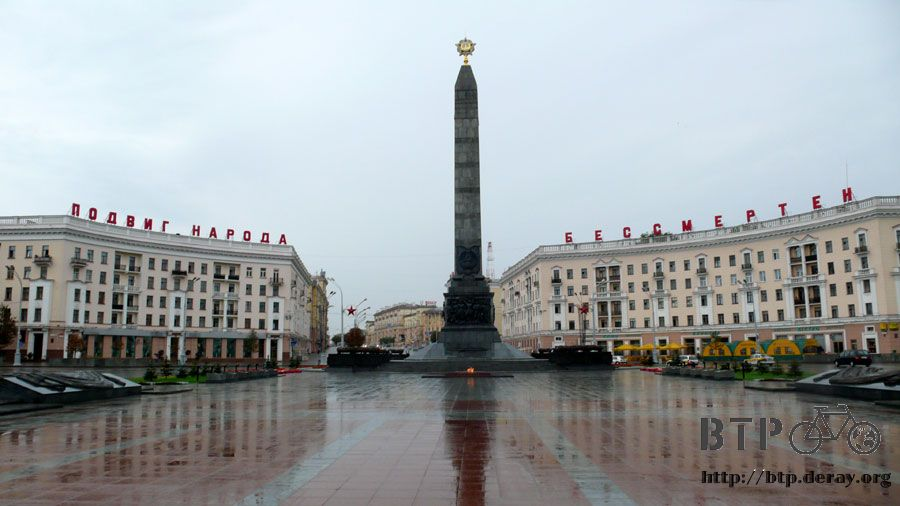
綠色的毛毛蟲公車，因為一節一節串起來而得名，這邊也有地鐵可以搭，但此刻不是進去地底大冒險的時候。
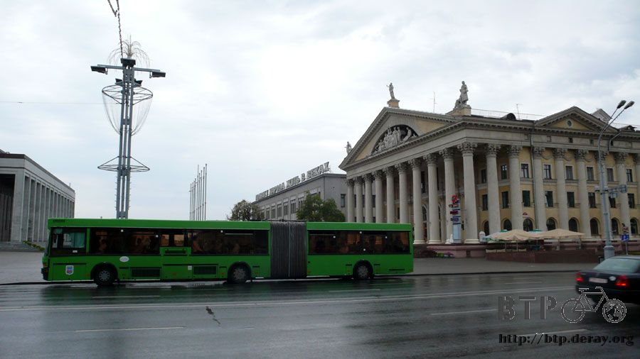
看著這個招牌和配色，我不禁要猜它是『感謝上帝今天是星期五』餐廳，實在太像了！
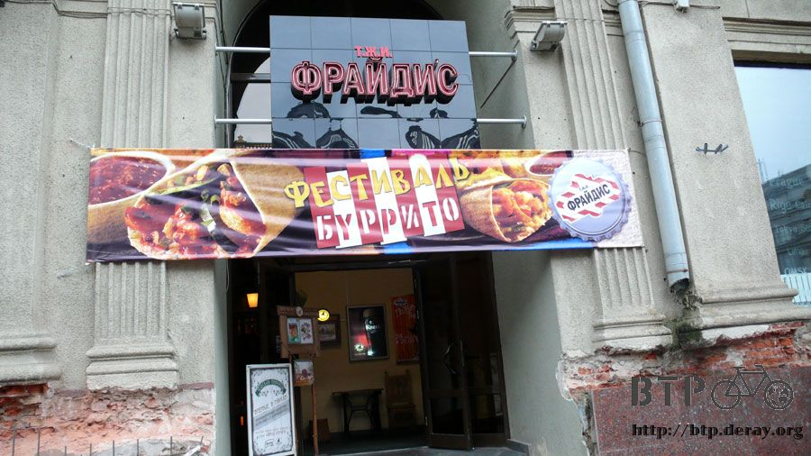
這個時候還不到早上九點，餐廳大門是開的，探頭進去看一下，服務生很快的就殷切招待，問我要用餐嗎？。
美式餐廳的好處是服務生會講英文，這邊的也不例外，真是太神奇了，找了半天有營業的竟然是這一間餐廳。
菜單看了一下，餐點都是七、八千到一萬多不等的金額，我拿出包包裡唯一的四千元白俄羅斯貨幣，問服務生用這些能吃啥？

服務生說這邊也可以收俄羅斯盧布，包包裡所剩的盧布不到一百元，紙鈔部份全部拿給服務生，硬幣則無用武之地。
這些錢就請服務生自己幫我決定能夠吃什麼，只要能填飽肚子就好了。
這一頓飯吃下來花了一萬多，雖然幣值很小，但是沒想到自己這輩子也有光一餐飯就吃一萬多的時候。
菜色如下：磨菇炒洋蔥、馬鈴薯煎餅配白醬。
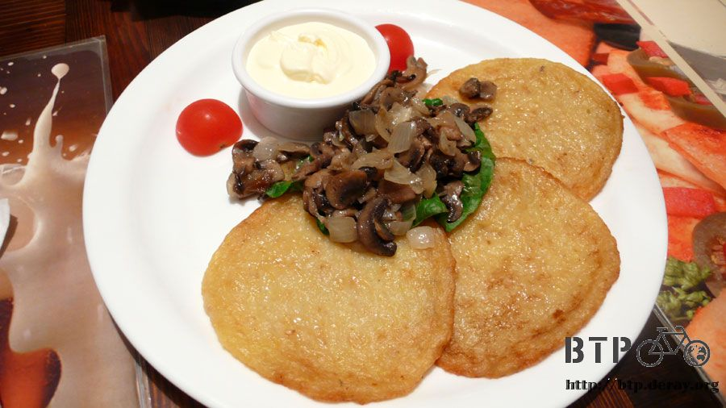
那個煎餅吃起來很像甜不辣，飢腸轆轆的我吃這些實在只夠塞牙縫，但是吃完這頓飯之後，身上就沒錢了。
沒有白俄羅斯貨幣，也沒有俄羅斯盧布，叮叮噹噹的硬幣派不上用場，唯一的貨幣就是美金，一張一百元，不知道哪邊可以找得開？
莫斯科隨處可見的兌幣處，在明斯克的街頭居然看不到，身上沒有盤纏總覺得旅行有點不安心，得想辦法解決才行。
喝著灑上肉桂粉，香甜的卡布奇諾，遊記就在這間餐廳寫完，接下來是找網路的時候了。

早上為了餐廳跟插頭就繞了老半天，結果找網路更慘，東晃西晃的什麼也沒發現。
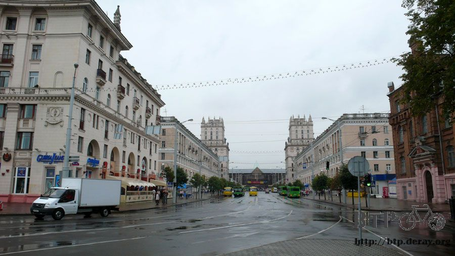
在下著雨的街頭拿出電腦搜尋無線網路訊號，搞得電腦都被雨滴弄得濕答答，如果今天早上找不到網路的話，這星期又要拖稿了>"<
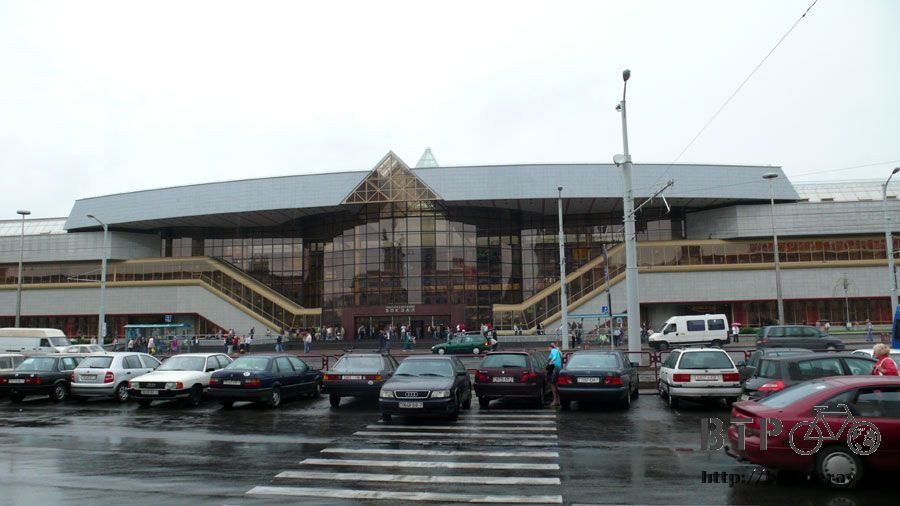
騎到這裡大概是火車站吧，身上濕得有點不舒服，除了找網路之外還得找離開城市的路。
沒地圖的情況下最好用的指路工具首推指南針，只要方向正確，就算路線有點偏差也沒什麼關係，總有一天可以接上大馬路。
搭配著路人的指示，朝著西南方騎，希望別像離開莫斯科那樣迷路得亂七八糟，讓我順利的出城吧。
雨勢時大時小，有時會瞬間變成滂沱大雨，無論如何就是沒有停的意思，既然如此那就不要硬撐，自己淋濕沒關係，行李的防水袋再度派上用場。
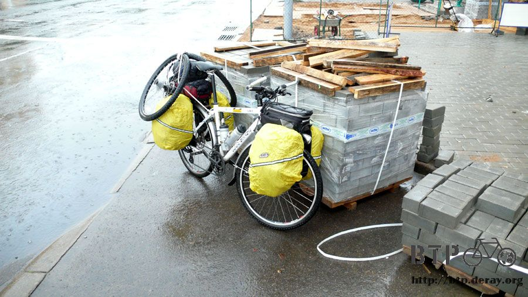
這時已經放棄尋找網路了，先離開城市再說，大雨淋個不停還在找網路實在蠢斃了。
看到這個指示牌我有點慌亂，M6、P28、M9、P23？
那我騎半個白俄羅斯的M1或者是E30跑哪去了？地標上的名字也都沒看過，布里斯特咧？
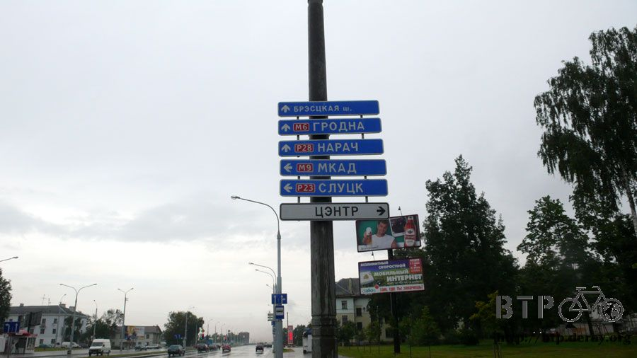
四條路憑運氣猜一條走，我選擇M9，因為當時離開莫斯科也是走M9離開，雖然是錯的路但總算有緣分。
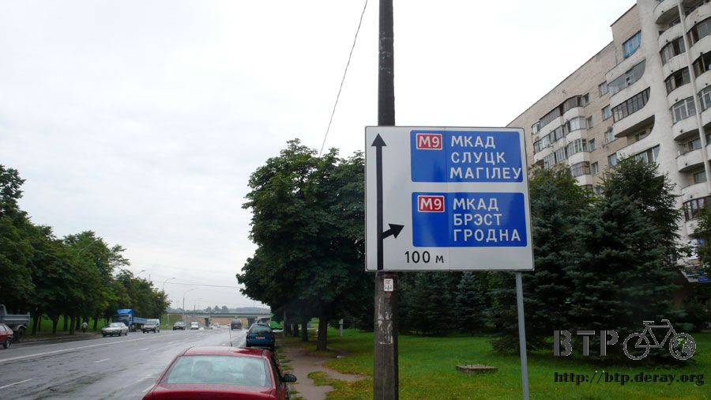
M9騎了一段之後總算重新看到布里斯特的指示方向，這樣就能夠放心了～
順著M9很快的就離開了首都，離開的瞬間雨勢就停了，這樣子明斯克給我的印象就會變成網路很難找、陰雨綿綿外加餐廳都沒營業。
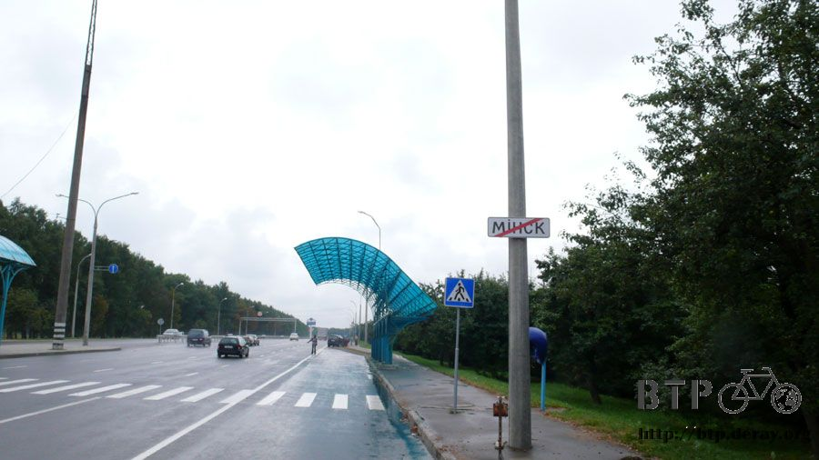
在路邊休息時看到的小菊花，米莎莎說今天是七夕，路邊的野花不要採，這些小花當送妳的禮物。
如果覺得這一小叢太寒酸沒誠意的話，那整片紫色的花海都送給妳～
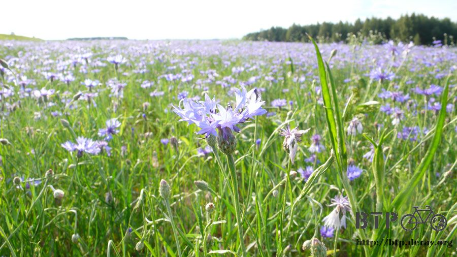
過去將近四個月的時間沒能陪在妳身邊，雖然如此，妳一直都在我心裡，陪伴著我度過每一天的旅行，很快的，再一個多月就能抵達巴黎，等我回去吧～ :D
我也不知道這是什麼花，只看到很多蜜蜂在飛舞，之前被蜜蜂叮讓我餘悸猶存，拍完照就快閃～一溜煙的跑不見人。
雨停了，天空也放晴，又恢復成艷陽高照的天氣。
難道這幾天碎碎唸的抱怨天氣熱被老天爺給聽到，所以下了這場雨讓我溫故知新，別忘記下雨騎車的辛苦。
離開首都之後變成騎在P1公路上，之後就會接上M1公路，迷路的情況不怎麼嚴重，指南針派上很大的用處。
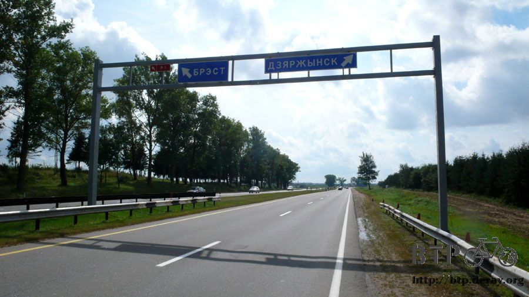
之前弄丟的那一雙鞋還蠻不便宜的，材質既透氣又防水，就算下雨全身濕答答，唯獨腳不會濕，那時候還不覺得有什麼神奇。
今天下雨淋了一會，除了身上濕得滴水之外，連鞋子跟襪子也兩者全濕，這雙新鞋子就沒有防水的神奇功能了。
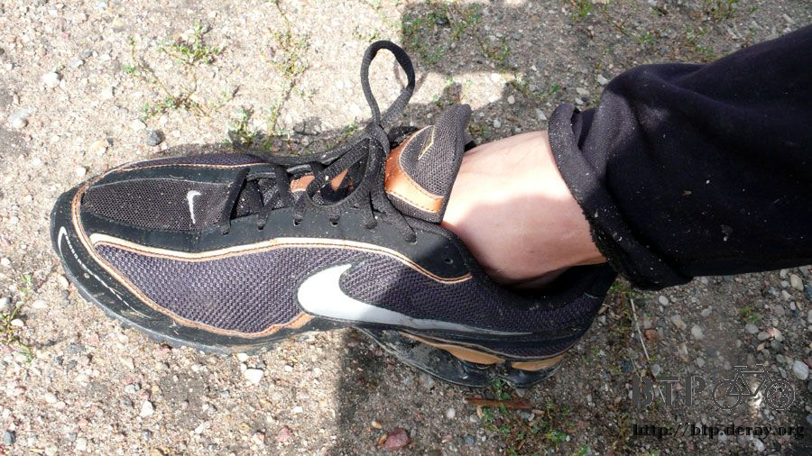
濕濕的感覺很不舒服，脫下濕襪子光著腳丫穿鞋騎車，如果這樣還是不好騎的話，藍白拖就要登場了。
身上沒有當地貨幣，盧布也花光了，看到加油站的時候拿著一百美金問商店區的店員能不能拿這個買東西？
因為加油站四種貨幣都收，換個錢應該不難吧？
店員居然跟我說不行，哇咧～這可是美金呢，連這個都不收實在太沒有眼光了。
於是我走出商店區，拿著同樣一張一百元，從加油區結帳的窗口問同一個店員，這一張一百元能不能換成當地貨幣？
店員看到又是我拿著同一張一百元，只是換個窗口而已，難道回答會有差異嗎？她大概覺得我在跟她搞笑，可是我真的是因為沒錢可以花而頭痛著。
商店區有個大叔揮揮手叫我過去，他願意跟我換錢。
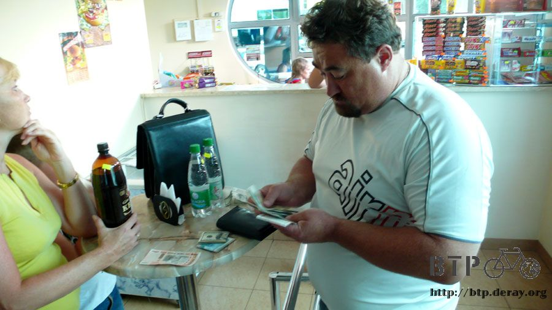
將手上的一百元交給他，接下來在白俄羅斯只剩三天左右，換個五十美金就夠花了，換太多到時候出國境百分之百也變成廢紙。
五十美金從大叔手上換回來變成十一萬，實在是誇張得好笑，五十變成十一萬，真是薄得好笑的貨幣。
昨天餐廳的年輕人跟我說一塊美金可以換兩千元，所以這個大叔只需要給我十萬塊就夠了。
多的一萬元他說這是給單車旅行者的優惠，其它地方找不到這麼好的換錢交易了。
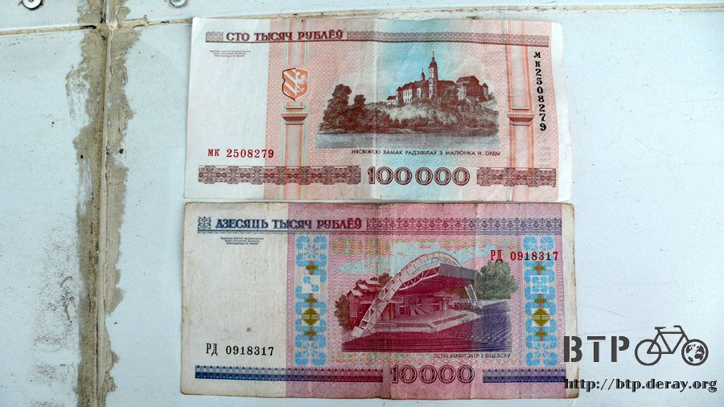
十一萬聽起來很多，其實才兩張紙鈔而已，一張十萬、一張一萬，十萬真是很驚人的數字，那麼多個零印在鈔票上面看起來就像玩具鈔票一樣。
別以為十一萬可以花很久，看看商店裡的標價，汽水類隨便也要就是兩千多元才有一瓶，一條巧克力也要一千五。
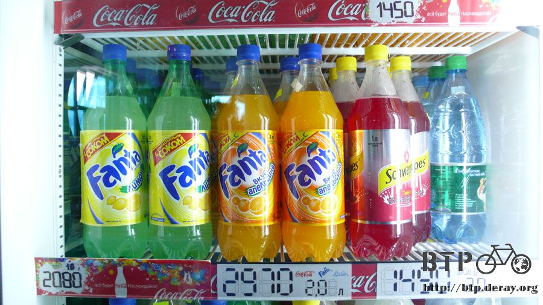
身上終於有錢可以花的感覺很好，在這邊買了一瓶汽水、果汁、蛋糕和甜筒，先拿十萬元去找回一堆零錢，以免之後找不開。
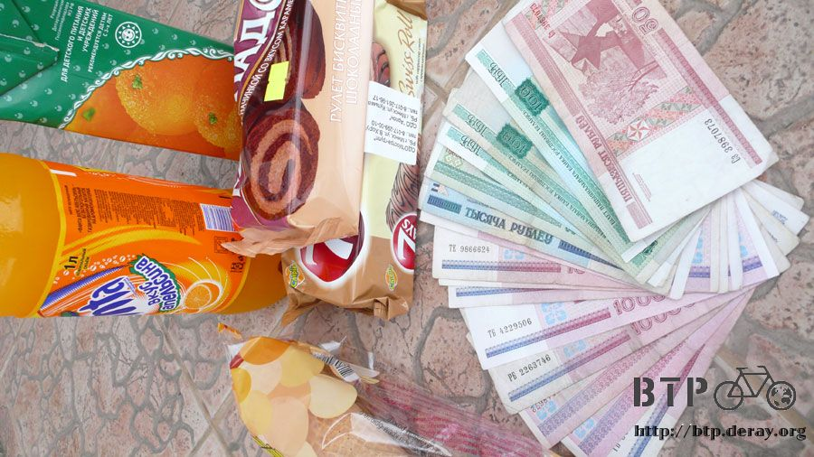
結果一張十萬元就找回了十五張的紙鈔，瞬間覺得自己根本就是大富翁，我有好多錢呀！
白俄羅斯的貨幣還有一點很好笑，紙鈔一張面額都可以印到十萬元了，但是五十、十元這種零頭還是用紙鈔而不是硬幣。
猜想用硬幣製作成本太高了，不如用紙鈔印比較省事，要印多少就有多少。
收起這一大疊的錢，默默提醒自己一定要在離開白俄羅斯之前全部花光光，留著除了當壁紙之外沒有別的用處。
坐在加油站外面吃甜筒休息片刻，腳丫子趁機透透氣，還好沒有很濕，腳跟鞋子一下子就乾了，休息完畢後就上路吧～
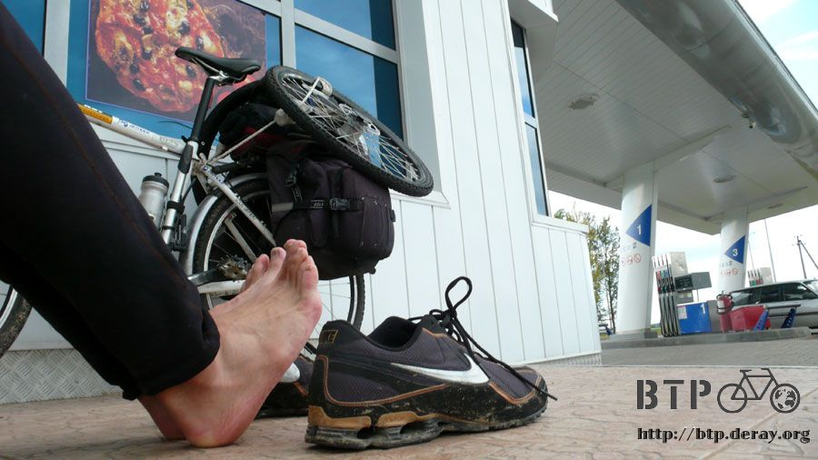
這個幫浦是在掛著水龍頭的區域找到的，之前這種地方都會變成休息區，我都懷疑水龍頭被商家占為己有。
這次沒有商家，真的只有一個幫浦，想打點清涼的地下水洗頭，結果這個已經被破壞了，不好好愛惜公物是不行的喔，其它人還要用呢。
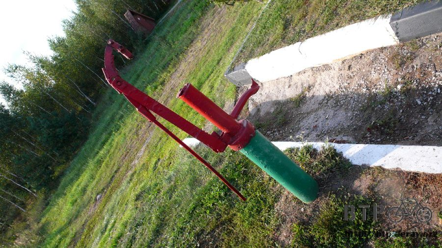
馬路的對面則是餐廳，今天的晚餐就靠它了，大餐時間到。
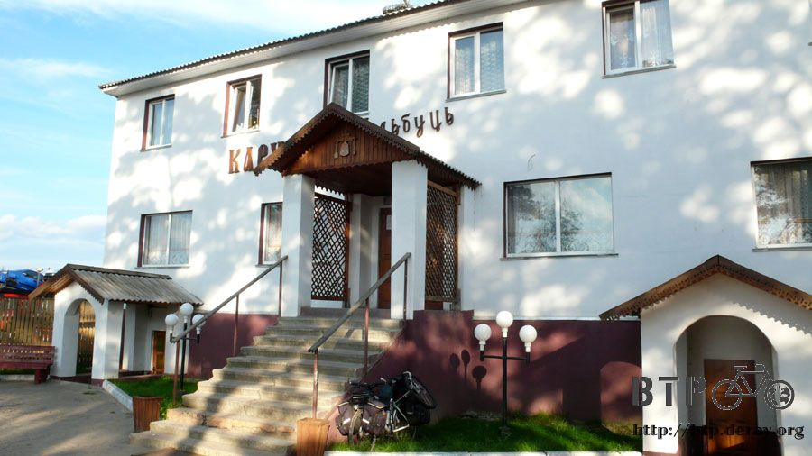
一進去就看到驚人的小費箱，一個雕像負責收小費，錢多的要滿出來，得拿大盤子來接，零零散散全都是百元以下的紙鈔。
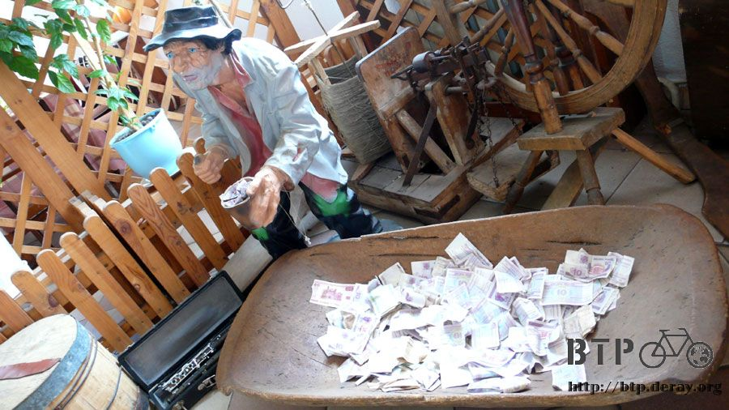
點餐的時候老闆娘只問我要吃肉嗎？喝湯？沙拉？麵包？咖啡？每問一樣我都點頭說是，細節部分就交給老闆娘去決定了。
吃飯前得先恢復乾淨，連續露營了五天，還能保持身上乾爽全都是靠這些洗手台。
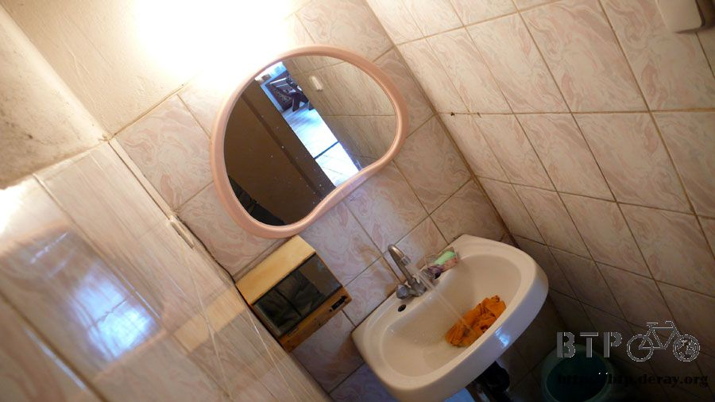
晚餐很好吃，所以每道菜獨立介紹一下：
豌豆、醃製高麗菜、白煮蛋、水煮雞肉絲混合的沙拉，配上美乃滋醬。
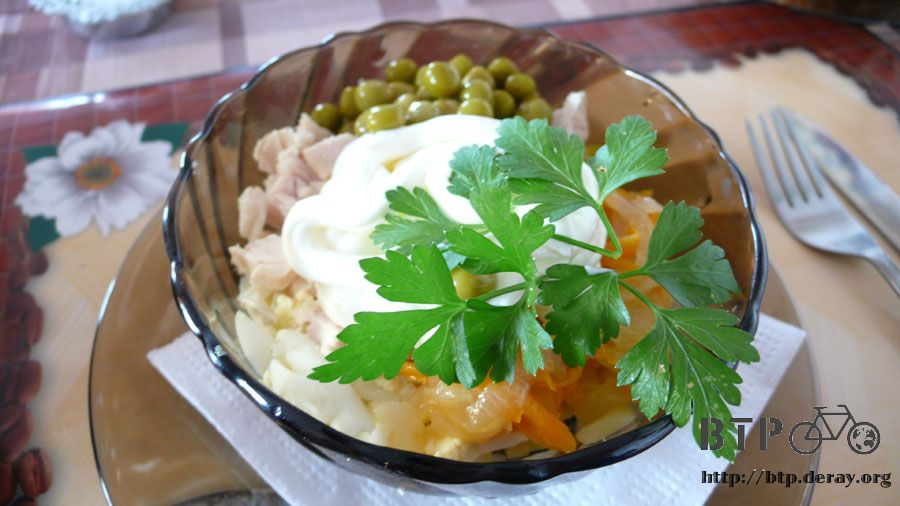
湯品是用超大的杯子裝，裡面有肉丸子跟馬鈴薯切塊，湯頭是雞湯。
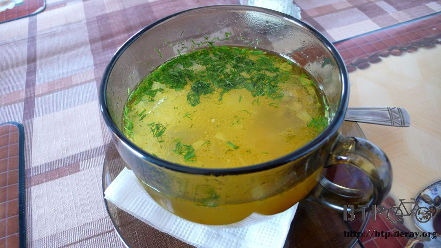
主菜是這一盤，洋蔥煎牛排就有三大塊，調味過的胡蘿蔔絲和豌豆，以及描繪出漂亮紋路的馬鈴薯泥。
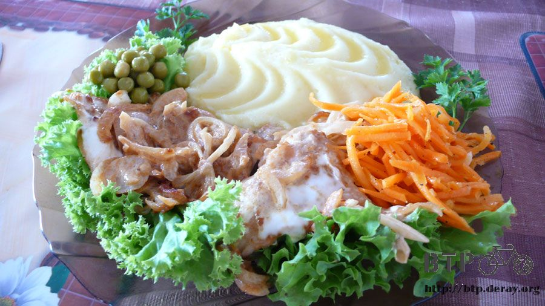
飯後還有小杯的濃縮咖啡，當然麵包也是不能少，這一餐飯吃下來花了一萬八千八百八十元，這個數字聽起來很像是辦桌的時候，一桌的價錢。
看來在白俄羅斯吃飯一餐想不超過一萬都很難，十一萬很快的消耗當中。
餐廳裡只有我一個散客，另外還有一大桌九個人在辦宴會，有一個朋友今天過三十一歲的生日。
我被他們邀請一起吃飯，或者說一起喝酒比較恰當 ^^"
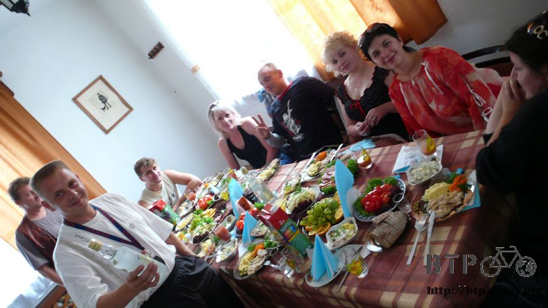
看著桌上琳瑯滿目的美食大家都沒什麼在吃，酒精濃度四十%的伏特加倒是一瓶接著一瓶的開。
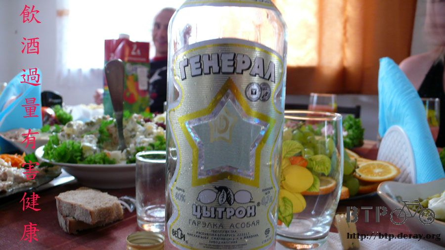
跟大家有說有笑的吃了一餐飯，伏特加倒在小酒杯裡，大家也都是一次乾掉一杯，很快的就喝光了兩大瓶。
吃喝得超開心一時就忘記了時間，離開餐廳的時候都晚上十點了，大家還在吃喝的時候我說差不多該上路了，謝謝你們的招待。
有人說今天就去他們家住吧，但是小多該怎麼放到車子裡，想了一下覺得太麻煩別人所以就算了，趁著天色還微亮趕緊找過夜處。
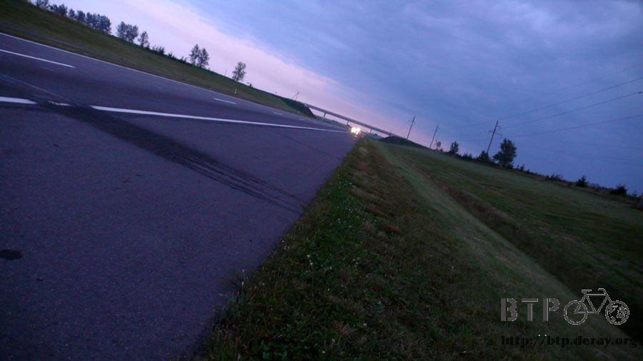
最後的一絲絲光明，突然覺得有點感傷，同時因為太陽下山了以及還沒找到睡覺的處所。
酒精作用之下膽子比較大，換成平常一定會開始傷腦筋說今天該睡那邊好？
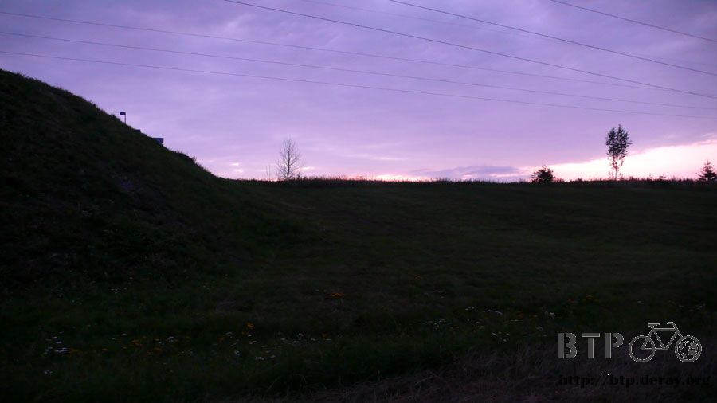
既然天黑了，那就找個路邊隨便睡吧～所以今天就睡在大馬路邊，上頭是天橋，萬一半夜下雨還可以遮一下。

停好小多的時候天色就一片黑壓壓，還得拿出手電筒照明才將帳棚給弄好。
睡覺之前能夠將身體擦乾淨，肚子裡又是美食跟純釀，睡在馬路邊也覺得很幸福，多謝陌生人邀請我一起加入生日宴會，我很開心～
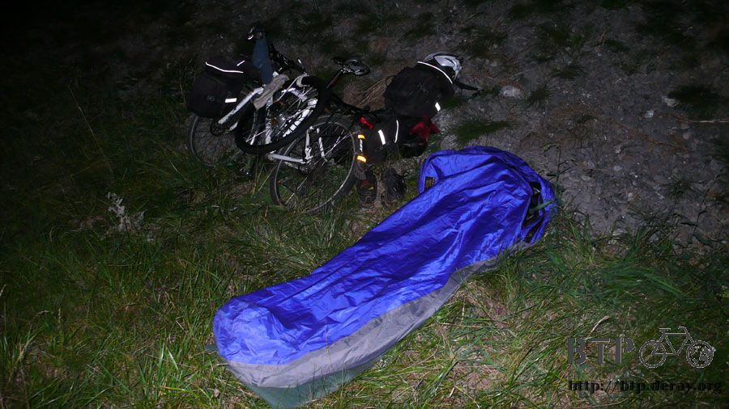
繼續閱讀：8.19 花錢如流水
俄羅斯-盧布－ 1：1.3 台幣
8.18 |
總計：480元 |
早午餐TGI磨菇炒洋蔥、馬鈴薯煎餅、卡布奇諾11000元、加油站芬達、果汁、蛋糕兩條、甜筒8550元、晚餐雞肉豌豆酸黃瓜沙拉、馬鈴薯肉丸子湯、洋蔥煎牛排配馬鈴薯泥、咖啡、麵包18880元。總計38430BLR，折合盧布480元 |
|